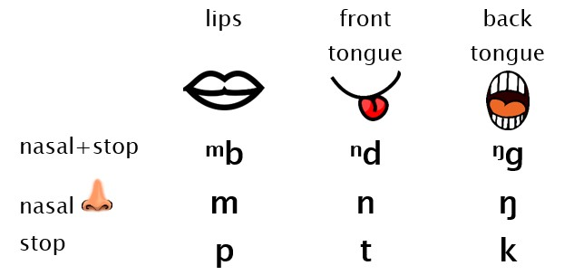
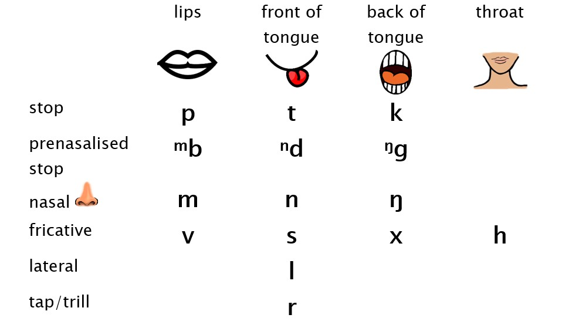
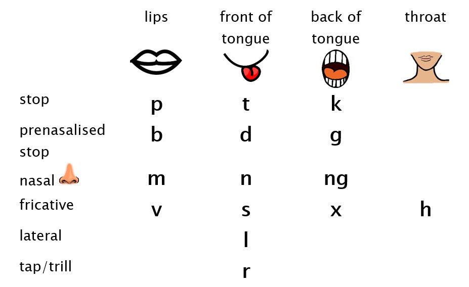
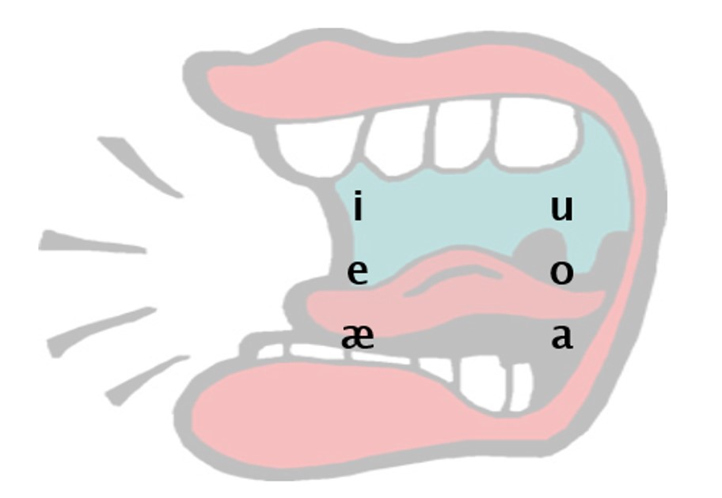

Sounds and spelling
- Seksen 1: Introduction
-
Seksen 2: Consonants
- Seksen 2.1: Stops
- Seksen 2.2: Nasal consonants
- Seksen 2.3: Prenasalised stops
-
Seksen 2.4: Fricatives
- Seksen 2.4.1: Variants of v
- Seksen 2.4.2: Variants of x
- Seksen 2.5: The two consonants l and r
- Seksen 2.6: Summary of consonant sounds
- Seksen 2.7: Double consonants
-
Seksen 3: Vowels
- Seksen 3.1: The sixth vowel æ
- Seksen 3.2: Long vowels
- Seksen 3.3: Vowels and glides
1 Introduction
I’m still working on English translations for this chapter, so some sections haven’t been translated into English yet. You might need to switch to the Bislama version.
This chapter is about the phonology (sounds) of Vatlongos, as well as discussing orthography, or how to write those sounds.
This chapter uses some technical vocabulary from the area of linguistics called ‘phonology’, but I try to explain them as clearly as possible.
2 Consonants
2.1 Stops
2.2 Nasal consonants
2.3 Prenasalised stops
This section is about the three consonants /ᵐb/ /ⁿd/ /ᵑɡ/.
These sounds are similar to the stops (/p/ /t/ /k/) that we’ve already talked about. You block the air in the mouth in the same places, and then let the air go make a burst of sound. But the main difference is that you put a small sound like the nasals (/m/ /n/ /ŋ/) first. These sounds start like a nasal made in the same place as the stop it comes before: with the lips, the front of the tongue, or the back of the tongue. In linguistics we call these sounds ‘prenasalised stops’.

When these sounds follow a vowel (e.g. /a/ in /landa/ 'they stay'), it's easy to hear the nasal at the start of these sounds. But when it follows a consonant, the nasal part of the sound is a bit shorter (e.g. /latnda/ 'they stay (just a few of them)'), and when you start a sentence or utterance with this sound, sometimes we leave out the nasal start of the sound, or pronounce it very quietly. For example, if I say /ndi napol/ 'I'm working!', sometimes it might sound more like [di napol].
Another thing that is different about these sounds compared to the simple stops /p/ /t/ /k/, is that these sounds are voiced. We talked about voicing in the last section in relation to nasal consonants. If you put your hand on your throat while pronouncing /ᵐb/ /ⁿd/ /ᵑɡ/, you'll feel that your voicebox in your neck will be moving a little bit, like a vibration. But if you say /p/ /t/ /k/ you won't feel that. In English, there are voiced stop sounds /b/ /d/ /ɡ/ that are really similar to /p/ /t/ /k/, but the only difference is that they have voicing. But in Vatlongos we don't have the simple voiced sounds /b/ /d/ /ɡ/ at all – there is always a nasal sound before them: /mb/ /nd/ /ŋɡ/.
There are some debates about to write these sounds. Because we don't have separate voiced consonants /b/ /d/ /g/ in Vatlongos, we could just use these three letters <b> <d> <g> to write the three sounds /mb/ /nd/ /ŋɡ/. This fits with the ideal rule that linguists have for spelling systems, that there should just be one letter for each sound. This system is good because it shows that these sounds are just one sound in the Vatlongos sound system: it's not like manggo 'mango' in Bislama (and English too), where this sound is actually a sequence of two sounds: /ŋ/ <ng> and then /ɡ/ <g>.
But some people will prefer to write these sounds as <mb> <nd> <ngg>, to make it really clear that there is a nasal sound at the start of these sounds too. This is a good idea because it's more similar to Bislama and English when children go on to learn to read in Bislama and English (although actually English spelling is really inconsistent about this problem because a lot of the time it spells /ŋɡ/ the same way as /ŋ/, e.g. finger looks the same as singer, but the sound is different). The only problem is that this system means that you use two or three letters to spell just one sound in Vatlongos, and it implies that Vatlongos has separate sounds /b/ /d/ /ɡ/, but Vatlongos doesn't have these sounds.
In the work I've done before I've just used <b> <d> <g>. When we did a poll on the Ratsepinni Vatlongos Facebook group in 2020 the results were quite close, and more people voted for us to use <mb> <nd> <ngg>. But I’ve seen that the Vatlongos Bible usually just uses <b> and <d> but also <ngg>, and when I’ve looked at the writing of lots of young people during the Young People’s Vatlongos project in 2023, lots of people just use <b> <d> <g>. So for now I’m going to continue to use <b> <d> <g>, but I know this is still an open question which is up to Vatlongos speakers to decide about when you’re writing in Vatlongos!
| Sound | Letter | Examples |
|---|---|---|
| ᵐb | b, mb | ba, barang, teben |
| ⁿd | d, nd | di, doxol, dup, redemien |
| ᵑɡ | g, ngg | gur, gehik, igak |
2.4 Fricatives
2.4.1 Variants of v
2.4.2 Variants of x
2.5 The two consonants l and r
2.6 Summary of consonant sounds
Now we’ve covered the fifteen consonant sounds of Vatlongos.
This image shows the symbols of the consonant sounds in the International Phonetic Alphabet (IPA):

This image shows the letters for writing these sounds. In this image I’m just showing one option for each sounds, but as we’ve already discussed, there are different ways to spell some sounds, and different decisions to make about orthography that are up to Vatlongos speakers to decide when they write Vatlongos. Whenever you write something in Vatlongos, like a text, a post on Facebook, a letter or a story, it’s like a vote to show your choice about these spelling questions. So if you don’t like the system of spelling here, tell me and also show the rest of the community what your preference is when you’re writing in Vatlongos.

This table shows every consonant sound with a letter and some example words.
| Sound (IPA) | Letter | Example | |||
|---|---|---|---|
| p | p | pat, sap, lasuppang, taappin | |
| t | t | tei, pat, ketteh, lutteong | |
| k | k | kaakau, xiak, mikkas, kokkorong | |
| ᵐb | b, mb | bos, naba, latba, barang, teben | |
| ⁿd | d, nd | di, ladoxol, latdup, redemien | |
| ᵑɡ | g, ngg | go, gehik, lagur, latga, igak | |
| m | m | mahis, mahulong, xamem, ammei | |
| n | n | ni, nahou, bien, nannemi, nasepinni | |
| ŋ | ng | nganak, ang, eising, mingngel | |
| v, β, [p] | v, p | venu, vahe, tuvava, naduva, nadup | |
| s | s | sap, bos, eas, tassen, messe | |
| x, ɣ, χ, ʁ, ʀ, [k] | x, k | xale, xil, sexien, taxiak, saxaras, sakras | |
| h | h | horamue, leh, vahe, kakah | |
| l | l | liei, lim, vul, gusil, mikila, lalleh, tellep | |
| r, ɾ | r | relit, ralu, bar, igoxor, xir |
2.7 Double consonants
3 Vowels
Now we’re ready to look at the vowel sounds. Vowels are sounds that you make without blocking the air in your mouth at all, you just change the shape of your mouth to change the sound of the vowel. Because you don’t block these sounds, you can make them last a long time, for example when you’re singing, you can stretch out the vowels to be really long.
In Vatlongos there are 6 different vowels: /a/ /e/ /i/ /o/ /u/ mo /æ/. That’s more than Bislama which only has 5, and it’s also more than the number of vowel letters in the alphabet, <a> <e> <i> <o> <u>, which makes it hard to spell all six of them easily. But it’s not a lot compared to English, which normally has up to 20 vowels (depending on the accent or variety of English).
To make different vowel sounds, you move your tongue inside your mouth.
You can try to feel this movement if you make the sound of /i/ (the vowel sound in the word di ‘stay’), and then try making the sound of /a/ (the sound inside of ha! ‘go’), then repeat them over and over again /i/ /a/ /i/ /a/. When you say /i/, you’ll feel that your tongue is up high near the front of your mouth. When you say /a/ your tongue will be down and at the back of your mouth, and it will also force you to open your mouth wider. That’s why when a doctor or a dentist wants to look inside your mouth, they’ll say ‘say ahhh’.
This image tries to show the position of the tongue in the mouth for the 6 vowel sounds of Vatlongos.

Another thing that changes the sound of vowels is the position of your lips. For a lot of vowels you don’t do anything special with your lips, they’re just normal. But for the two vowels /o/ and /u/ you have to make your lips round. If you try to say /u/ (the sound in ut ‘shore’) and then /i/ (the sound in di ‘stay’), and then repeat them /u/ /i/ /u/ /i/, you’ll feel that your lips are moving a lot (and also your tongue will stay up high in your mouth but move backwards and forwards).
This table shows the position of the tongue and lips for each vowel.
| Vowe | Tongue | Lips |
|---|---|---|
| a | down, back | normal |
| e | middle, forward | normal |
| i | high, forward | normal |
| o | middle, back | round |
| u | high, back | round |
| æ | down, forward | normal |